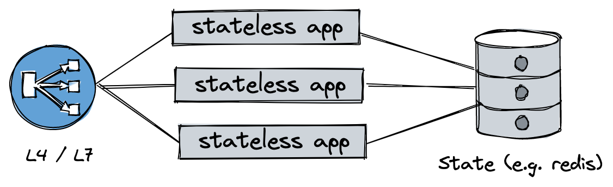
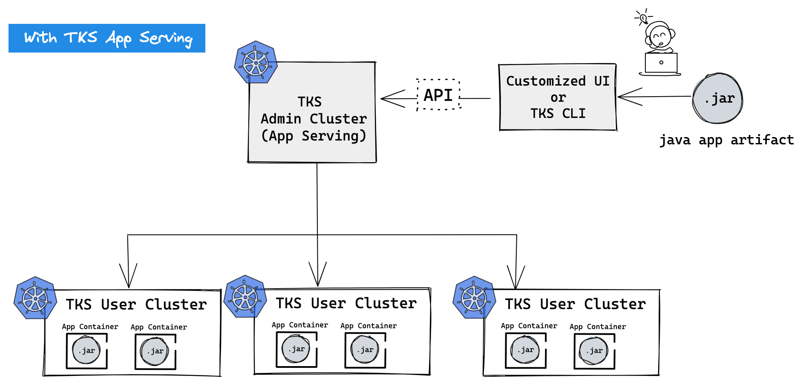
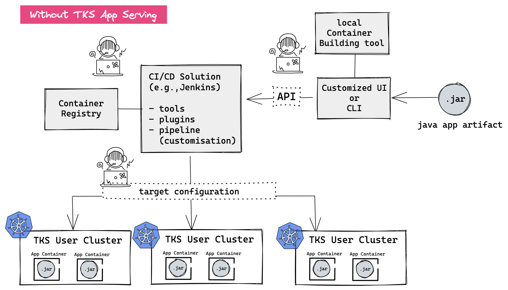

App Serving¶
TKS App Serving: Legacy Java App을 컨테이너화하여 MSA로 배포하는 툴
개요¶
2022년 1월 현재, 대한민국은 MSA 전환기로 판단된다. 특히, SW를 컨테이너로 패키징하여 배포하는 기술과 Kubernetes라는 다수의 컨테이너들을 효율적으로 관리할 수 있는 플랫폼이 본격적으로 활용되기 시작하면서, MSA로 전환하고자 하는 기업들이 대폭 늘어나고 있다.
Kubernetes는 Micro Service Architecture(MSA)를 제공하는 PaaS로 De-facto 표준 SW stack이다. 하지만 Kubernetes는 설치/운용/사용 측면에서 Learning Curve가 높다. 이는 Legacy tool들에 비해 Abstract level이 높기 때문이다. 이런 경우 빠른 Test를 통한 습득이 효과적인 경우가 많다. 따라서, SKT의 Best Practice를 바탕으로 사용자가 컨테이너와 Kubernetes에 대한 충분한 지식이 없이도 쉽게 Legacy Java App을 컨테이너화하여 Kubernetes상에 MSA 형태로 배포할 수 있는 툴을 제공 하고자 한다.
동기 (Motivation)¶
국내 Enterprise Project 환경분석¶
먼저 2022년 1월 현재, 국내 SI 생태계를 살펴본다.
Dominant Architecture: REST & Stateless¶
대부분의 SI SW는 동일한 구조를 갖는다. 보통 아래 그림과 같은 구조를 갖는데, 이를 통해 Scaling과 SW 안정성을 L4/L7 장치와 데이터베이스 (or Storage solution)가 제공하게 함으로, SW 개발 Risk를 줄일 수 있다. 이는 고급 비기능요소(Scaling/Data consistence)를 Common하고 검증 받은 Solution를 통해 확보하고, SI 개발 자체는 Business에만 집중할 수 있는 장점이 있으며, 특정 개발사의 산출물이 비기능요소에 대한 Dependency가 없기 때문에, Vendor Locking도 막을 수 있다.

Dominant Language: Java¶
국내 SI Project의 대부분은 MVC pattern을 지원하는 Spring 같은 Java Framework을 사용한다.
국내 대부분의 서비스는 Web Service를 근간에 두기 때문에, REST API나 Web Server를 포함하는 WAS를 사용하는 경우가 많고, 검증된 Framework을 통해 병렬처리, Data Abstraction, View의 Flexiblity를 제공 할 수 있기 떄문이다.
이런 Framework은 환경에 대한 Dependency를 줄이기 위해, Java class 및 Config file를 모두 포함하는 표준화된 Project 구조로 디렉토리 구조를 제공하고, 배포 용의성을 위해 Jar 화일로 전체 Project를 묶어서 배포하는 경우가 일반적이다.
Enterprise CI/CD의 특징¶
Tech기업(직접 개발을 하는 회사 e.g Game회사)가 아닌 일반적인 Enterprise의 경우, 외주 개발을 통해 Enterprise의 IT System을 도입 한다.따라서 개발/구축/운영을 자체적으로 하는 Tech 기업의 DevOps, CI/CD pipeline 구축과는 좀 다른 형태의 시스템 구축이 필요 하다.
CI (Continuous Integration): 개발 - 테스트 를 지속적으로 수행하며 SW의 완성도를 보장하며 개발 속도를 증가시키는 프로세스 CD (Continuous Deployment): 개발된 SW를 배포하고, 이 후 변경사항에 대한 업데이트나 버전 업그레이드를 효율적으로 수행 가능한 프로세스
Tech 기업의 경우, SW Code 작성, Build, Test이루어진 CI pipeline과 검증된 SW 결과물을 고객에서 제공하는 CD pipe 라인이 통합 구축 된다.
하지만 Enterprise의 경우, CI의 영역은 외주 개발업체가 완결적으로 수행 후 고객의 환경에 구축하는 SI 작업이 추가로 진행된다. 즉, Tech기업과 달리 CI보다는 해당 Enterprise의 환경에 맞는 별도의 CD 시스템을 갖추는 것이 중요하다.
Why MSA and Why Kubernetes¶
Micro Service의 목적은 한마디로 개발/배포 속도향상을 통한 서비스 적기 적용이다. 따라서 지금과 같이 빠르게 변화하는 시장 상황에서 Enterprise는 주도권을 잡기 위해서 1) 빠르게 제품과 서비스를 변화시켜야 하고, 이를 위해 2) 빠르게 사내 IT시스템을 새로운 Biz에 맞게 변경해야 하며 3) 필요시 대 고객 서비스도 빠르게 개발해야 한다. 따라서 빠르고 유연한 SW 구조가 필요하고, 언급된 MSA를 통해 시장과 고객의 변화를 이끌어 갈 수 있다.
Micro Service를 제공하는 PaaS는 개발 유연성(Language agnostic)과 배포 유연성(Portability, Continuous Deployment)을 제공해야 한다. 따라서 Monolith 구조의 SW에 비해 관리 포인트가 증가하기 때문에, 표준화된 SW Architecture와 자동화가 필요하다.
Kubernetes는 Container 기술을 통해 개발/배포 유연성을 제공하고 Kubernetes가 제공하는 표준화된 Abstraction을 통해 위에 열거된 모든 요구사항을 만족시킨다.
MSA 전환기의 어려움¶
앞서 언급 했듯이 MSA를 지원하기 위해 Kubernetes는 필수 시스템이다. Kubernetes는 Container 기술을 근간으로 한다. Container는 SW를 Delivery하는 상자다. 즉 물류를 나르는 Container가 정형화된 박스를 제공함으로 그 안에 어떤 물건이 실리던, 일단 Container에 실리기만 하면 전세계 어디에라도 육/해/공의 모든 운송수단을 통해 빠르게 유통시킬 수 있는 것과 같이, SW도 Container로 패키징하면 개발 결과물을 표준화된 방식으로 Kubernetes를 통해 어디에든 쉽게 서비스 할 수 있다. 하지만, 국내 대부분의 SW개발 현장에서는 다음과 같은 어려움들이 발생한다.
어려움 1¶
Kubernetes를 활용할 경우, 개발된 SW를 Container로 만들기만 하면 표준화된 방식으로 서비스를 제공 할 수 있다. 하지만, 어려움은 Legacy (국내의 경우 Java Spring Framework 기반) SW 개발사의 경우, 알맞은 툴을 제공한다고 하더라도 개발 산출물로 Container로 만드는 것 자체에 대해서 큰 부담을 느끼는 경우가 많다.
어려움 2¶
SW를 Container 형태로 패키징하여 서비스로 제공하기 위한 다양한 방식이 존재한다. 이 방식들은 Know/How의 영역으로 어떤 방식을 사용할지에 대한 경험과 해당 환경에 적합한 방식을 찾기 위한 논의가 필요하다. Kubernetes에 익숙하지 않는 전환기에는 다양한 방식들 중에서 자신의 환경과 요구사항에 적합한 최선의 방식이 무엇인지 찾기 내기가 쉽지 않다.
어려움 3¶
위 언급된 내용이 정리되고 최선의 방식을 결정하더라도, 실현 단계에는 이를 위에 필요한 SW 스택을 알아서 선택하고 설치해야 하며, 이를 안정적으로 운영 가능해야 한다. 또한 해당 SW 스택을 설치하기 위해서 가상서버(VM) 혹은 물리서버들로 이루어진 환경을 구성해야 한다.
어려움 4¶
배포 대상(Target Cluster)에 Micro Service을 설치하기 위해서는, Target Cluster의 API Server 접근 권한을 별도로 관리해야 합니다.
Simple App Deployment (TKS APP Serving)¶
TKS APP Serving (개발될 서비스명, 가칭)은 개발업체가 개발한 결과물 (i.e. .jar (package된 개발 산출물)만 있으면 Container 이미지 생성부터 TKS의 Best Practice 기반으로 Kubernetes에 서비스로 배포하는 것 까지 한번에 제공한다. 특히 TKS App Serving는 TKS Admin Cluster에서 API형태로 제공되는 Feature이기 때문에, 복잡한 SW stack 관리와 Credential관리가 별도로 필요 없다. 또한 기본으로 제공하는 CLI를 통해 서비스 사용도 가능하다.

아래는 TKS App Serving을 사용하지 않았을 경우 예상되는 Enterprise CD 구성이다. CI/CD Solution 자체의 유지/보수 비용 및 Cluster가 증가함에 따라 Target 관리 비용이 증가하는 구조이며, SW개발사가 컨테이너를 만들고 배포하는 과정에 대한 지식이 필요하게 된다.

Insight¶
국내 SI Project의 대부분은 Stateless 구조를 갖는 Java SW며, 배포 편의성을 위해 .jar를 배포한다.
즉, Jar file이 SW 개발사의 CI pipline을 통해 나오는 최종 산출물이며, jar file의 실행 Script를 VM/OS 환경에 맞게 작성하는 것이 일반적인 배포 방식이다.
또한 Stateless한 SW 이기 때문에, Replicated App의 config는 거의 유사하다. 따라서 Project에 Config file로 동일 설정이 일괄 적용되어 있는 경우가 대부분이다. 이런 이유로, Jar로 배포되는 Legacy Stateless App를 컨테이너로 만들어서 TKS User Cluster에 간단하게 배포할 수 있는 Tool이 있으면 매우 도움이 될 것 이다.
Goals¶
- Jar file을 Input으로 Continer image를 Build하는 API 를 제공한다.
- Biuld된 Image를 Registry에 등록하는 API를 제공한다.
- Build 된 Container를 TKS User Cluster에 서비스로 배포하는 API를 제공한다.
- 배포된 TKS-User Service의 리스트와 상태를 관리하는 API를 제공한다.
- 배포된 TKS-User Service를 삭제하는 API를 제공한다.
- 위의 API 기능들을 손쉽게 사용 가능한 사용자 CLI를 제공한다.
Non-Goals/Future Work¶
- Solution으로 TKS On-prem에 제공할 경우에만 제공된다.
- TKS Admin clutser의 자원을 사용하기 때문이다.
- 컨테이너 빌드, 배포와 관련되어 사용자가 변경할 수 있는 옵션을 제공하지 않는다. (모두 pre-built되어 사용만 가능한 형태로 제공)
- 향 후 Template형태로 사용자가 Customization가능하게 하는 것은 별도로 논의
- CI, 즉 테스트를 수행하는 단계를 넣는 것은 고려하지 않는다.
사용자 스토리 (User Story)¶
사용자 Story 1¶
A사는 Java로 개발된 서비스를 운영 중이다.
A사는 L7 Load balancer로 B사의 Solution을 사용 중 이었으나, 올해 4월로 라이센스가 만료된다. 현재 B사의 Solution은 과거에 비해 경쟁력을 많이 상실했고, 서비스가 점점 많아짐에 따라, L7 라우팅 부하 모니터링 부하 L7의 설정 관리의 복잡성이 문제가 되었다. 따라서 A사 운영팀은 내부 논의 후 Kubernetes도입을 결정했고, 복잡한 기능을 제공하지 않지만 용량과 안전성이 좋은 C사 L4 Loadbalancer를 도입하고 복잡한 L7 routing은 TKS 도입을 통해 실시하기로 했다.
A사는 Kubernetes PaaS 도입을 통해 Infra를 개선하고 점차 MSA에 맞는 시스템 구축을 점진적으로 실시 하고 싶다. 분석결과 대부분의 A사 IT System은 Stateless 구조이기에 Storage/DB solution은 우선 legacy를 활용하고 Java로 구현된 Biz Logic을 Kubernetes에 실행하기로 결정했다.
따라서, A사는 기존 SW TKS 개발기에 구동시켜 Feasibility Test를 실시하고자 한다.
- A사 운영팀의 김타코님은 기존 개발산출물의 .jar 화일을 확보한다.
- 김타코님은 Bastion VM에 설치된 tks cli를 통해 tks app serving 서비스를 활용하여 .jar 화일을 TKS user cluster 에 설치한다.
CLI Example:
tks appserve legacy-app-v2.jar --port 8080 --version 2 --name legacy-app --targetcluster dev2 --onestop --deployTemplate general
tks appserve legacy-app-v2.jar --deployConfig legacy-app.yaml
-
설치 후, 김타코님은 TKS에서 제공하는 LMA서비스를 통해 모니터링을 하면서 다양한 시험을 해 본다.
-
HTTPS 인증서를 Ingress 를 활용해서 Test한다.
- Pod의 Spec. 개수를 바꿔가면 성능을 Test한다.
-
App v1 --> V2 로 Rolling upgrade 를 실시한다.
-
김타코님은 Test결과 다음을 확인 할 수 있었다.
-
Ingress 설정으로 API의 인증서 관리를 표준화 할 수 있어, 업체의 종속성이 줄어 들었다. 자동화된 인증서 update방법을 찾게 되었다.
- Rolling update를 통해, SW 변경 작업을 표준화된 방식으로 진행 했다.
- App v1 --> V2 로 Rolling upgrade 를 실시한다.
배포된 TACO MSA 구조 Example
+------------------------------------------------------------------+
| TKS User Cluster |
| +-------------+ |
| +-------------+ | Deployment | |
| |Ingress | | : Pod config| |
| |: L7 config | +-------------+ |
| +-------------+ |
| +-------------+ |
| |-->| Pod : App | |
| +-------------+ +-------------+ | +-------------+ |
+------------------+ HTTPS | | Ingress | HTTP | Service | | +-------------+ |
| L4 Load Balancer |-----------|->| Controller |------> | : Virtaul IP| -|-->| Pod : App | |
+------------------+ | +-------------+ +-------------+ | +-------------+ |
| | +-------------+ |
| |-->| Pod : App | |
| +-------------+ |
| |
| |
+------------------------------------------------------------------+
사용자 Story 2¶
B사는 고객을 위한 새로운 서비스를 빠른 시일내로 개발하여 런칭하고자 한다. 경쟁사들이 유사한 서비스를 준비중에 있는 상황이고, 해당 서비스는 앞으로 고객의 니즈나 비지니스의 변화에 따라 새로운 기능들을 경쟁사보다 빠르게 시장에 출시해야 한다.
B사는 이를 위한 프로젝트를 만들고 서비스 기획을 시작하면서, 이를 개발하여 서비스로 런칭할 수 있는 외주 개발사를 찾기 시작했다. 또한, 빠른 개발과 배포를 통한 서비스 출시 시간 단축과 이후 지속적인 변경에 대한 신속하고 유연한 대응을 위해 MSA구조로 개발하기로 결정하고, 이를 위해 Kubernetes를 도입하고자 한다.
하지만, 후보 외주 개발사들은 원하는 비지니스 도메인에 대한 개발역량은 뛰어니지만, 컨테이너 기술이나 MSA기반의 배포, Kubernetes사용 경험이 거의 없어서 프로젝트에 참여하기를 어려워하고 있고, B사 내부에서도 이를 지원할 수 있는 충분한 기술/운영 인력이 확보되어 있지 않아 프로젝트 진행에 어려움이 발생하고 있다. 따라서, 외부 개발사가 개발에만 집중을 할 수 있게 하면서 MSA기반의 배포/적용을 손쉽게 해결해 줄 수 있는 방안을 찾기 시작했다.
분석 결과 B사가 원하는 서비스들은 대부분 Stateless 구조로 개발될 예정이며 Storage/DB solution은 우선 legacy를 활용하고 외주 개발사가 익숙한 Java를 사용하여 Biz Logic을 구현하고 이를 TKS App Serving을 활용하여 Kubernetes에 실행하기로 결정했다. (외부개발사는 원래 잘 하던 개발에만 집중 -> 개발된 Java App은 TKS App Serving을 활용하여 Kubernetes에 배포하여 서비스 런칭)
A사는 외주 개발사에게 SW개발을 의뢰하였고, 개발자들이 프로젝트룸에 들어와서 개발을 진행하였다. SW 개발이 진행되어 결과가 하나씩 나옴에 따라, B사 담당자는 해당 SW를 TKS 개발기에 구동시켜 Feasibility Test를 실시하고자 한다.
- A사 운영팀의 박타코님은 개발사로부터 개발산출물의 .jar 화일을 확보한다.
- 박타코님은 Bastion VM에 설치된 tks cli를 통해 tks app serving 서비스를 활용하여 .jar 화일을 TKS user cluster 에 설치한다.
CLI Example:
tks appserve legacy-app-v2.jar --port 8080 --version 2 --name legacy-app --targetcluster dev2 --onestop --deployTemplate general
tks appserve legacy-app-v2.jar --deployConfig legacy-app.yaml
- CLI를 실행하니 주어진 .jar파일이 container로 빌드되어 저장되고, 지정된 tks dev2 cluster에 설치가 완료된 후에 "success" 알림이 표시되었다.
- 이 후에 박타코님은 TKS LMA를 통해 모니터링을 하면서 정상 동작여부를 확인하고 scale-out 테스트를 수행해본다.
- 해당 SW의 새로운 버전이 나와서, 박타코님은 업데이트된 .jar파일을 받아서 다시 tks cli로 배포를 한다. 배포가 이루어지면 Rolling 방식을 통해서 운용중인 서비스에 영향없이 새로운 버전으로 업데이트가 자동으로 이루어진다.
- 추가로, TKS에서 제공하는 LMA서비스나 Service Mesh를 통해 다양한 모니터링 및 Tracing이 가능하다.